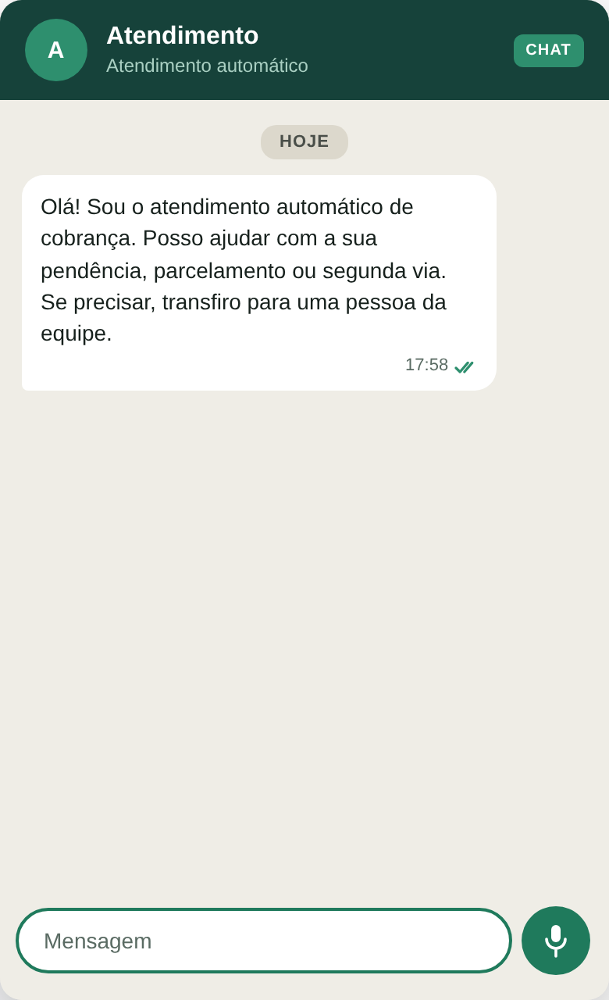
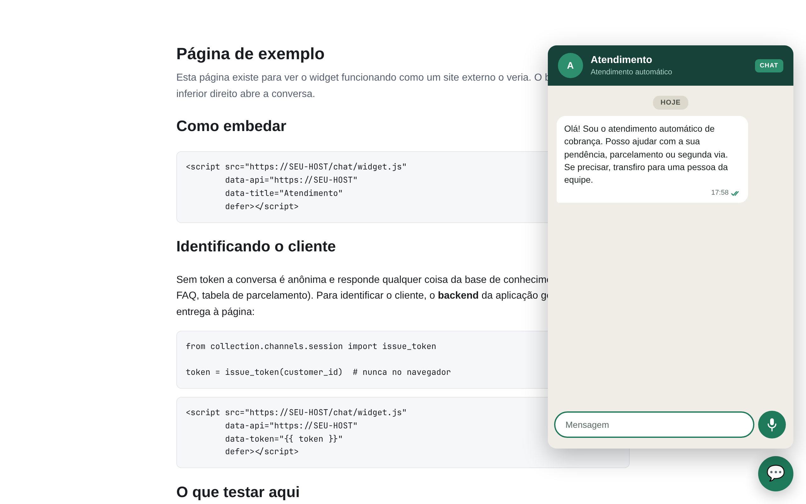
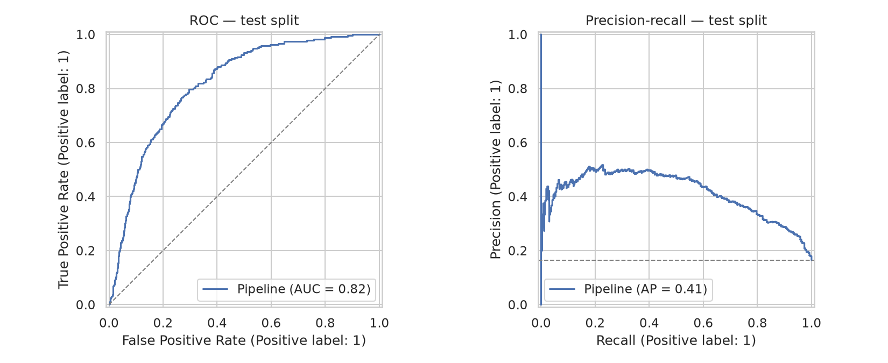
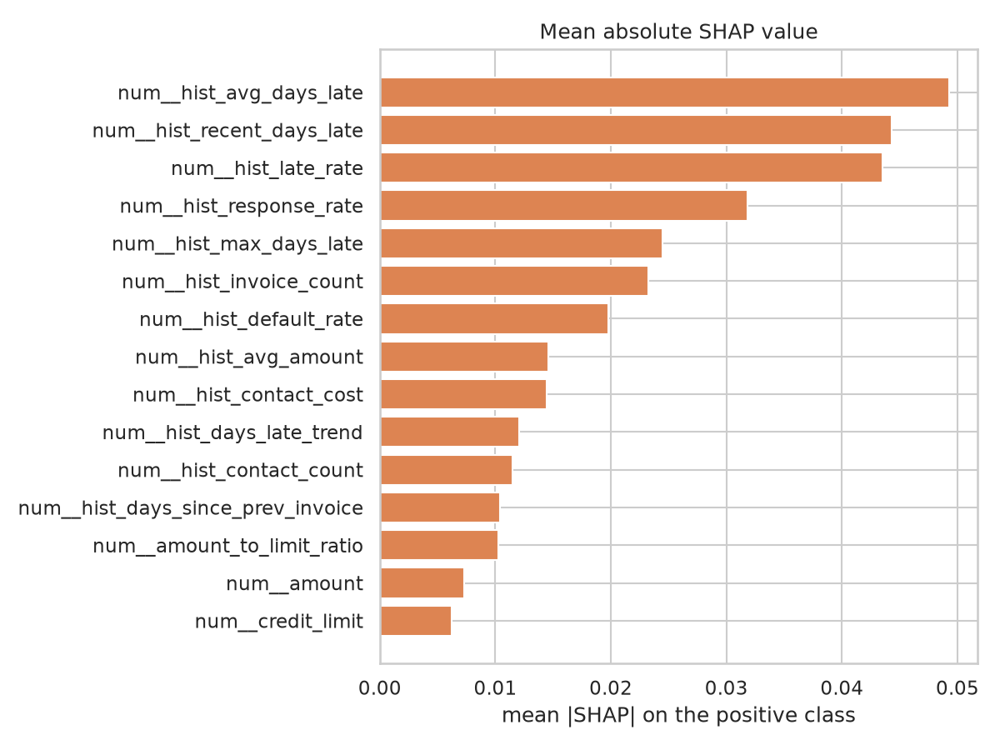
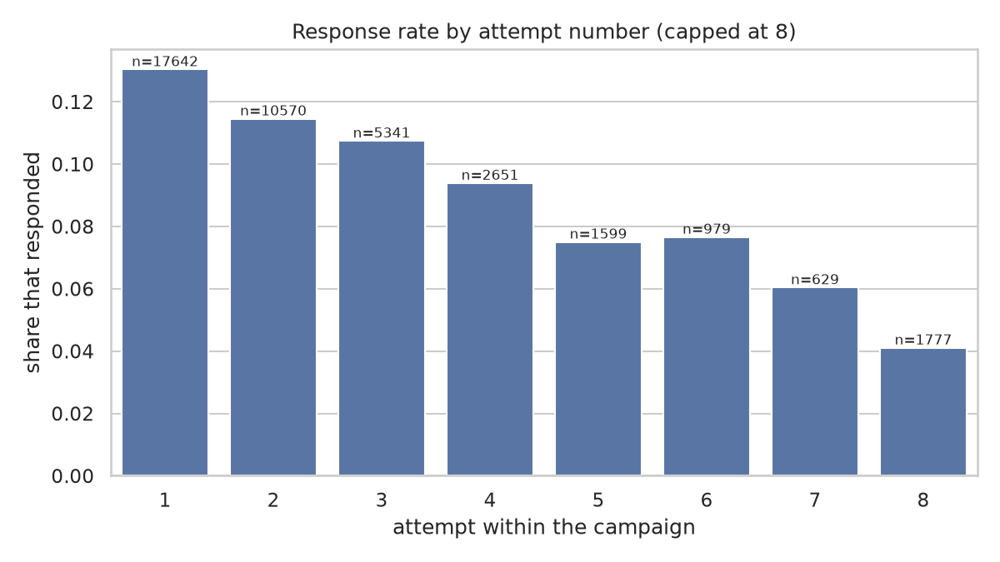
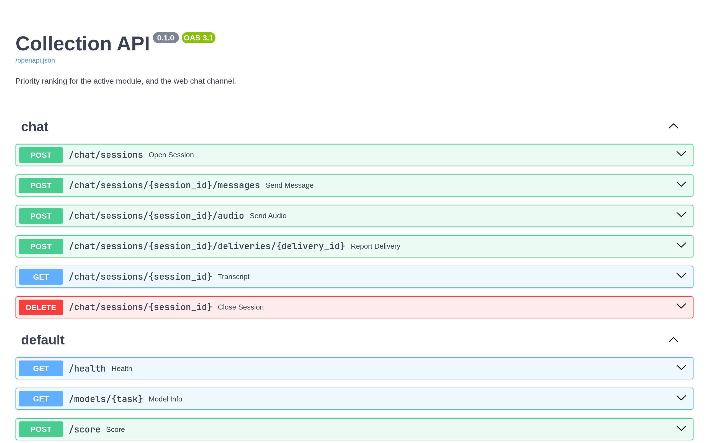

Sistema Multiagente Inteligente de Cobrança com LLM, RAG e Machine Learning
06/11/2026 — pré-apresentação
O sistema conduz a cobrança de recebíveis com três agentes coordenados por um orquestrador central: um agente responsivo que atende o cliente com respostas ancoradas na base de conhecimento (RAG), um agente proativo que decide quem contatar, quando e por qual canal dentro das restrições legais, e um agente preditivo que ordena a fila por probabilidade de pagamento e de inadimplência futura.
| Entregas do cronograma concluídas | 14 de 19 (até 29/10) |
| Pull requests integrados | 28 |
| Testes automatizados | 689 |
| Código | ~14,6 mil linhas de produção · ~8,5 mil de teste |
| Pendente | voz em tempo real (entrega 15) e a fase de avaliação e redação (16–19) |
O que esta prévia mostra: o widget de chat funcionando de ponta a ponta (contato proativo, dúvidas respondidas, contestação escalada para uma pessoa, opt-out), os modelos preditivos com suas métricas, e as avaliações já medidas de cada módulo.
Arquivos que acompanham este PDF:
video/00-demo-completo.mp4: demonstração de 49 s com as
três cenasvideo/01-conversa.mp4, 02-opt-out.mp4,
03-celular.mp4: as cenas separadasimg/: todas as capturas e gráficos em alta
resoluçãoterminal/: a saída bruta de cada comando de avaliação
executado hoje ┌──────────────────────────────────────────┐
│ ORQUESTRADOR │
│ roteia · prioriza · aplica opt-out │
│ · registra │
└──────────────────────────────────────────┘
│ │ │
┌──────────┘ │ └──────────┐
▼ ▼ ▼
┌────────────────┐ ┌──────────────────┐ ┌────────────────────┐
│ RESPONSIVO │ │ PROATIVO │ │ PREDITIVO │
│ intenção + RAG │ │ motor de regras │ │ ranking via API │
│ + LLM │ │ + composição │ │ POST /score │
└────────────────┘ └──────────────────┘ └────────────────────┘
│ │ │
└─────────────────────────┼──────────────────────────┘
▼
┌──────────────────────────────────┐
│ CONTRATO DE CANAL │
│ chat (pronto) · voz (pendente) │
└──────────────────────────────────┘
▼
┌──────────────────────────────────┐
│ REGISTRO DURÁVEL MULTI-INQUILINO│
│ Postgres + pgvector · MinIO │
└──────────────────────────────────┘Decisões que sustentam a defesa:
America/Sao_Paulo, nunca em UTC: 08:00 UTC são
05:00 no Brasil, um horário proibido.O widget é embutido em qualquer site com uma tag
<script>, fica isolado em shadow DOM e fala
com a API do sistema. As cenas abaixo são do servidor real, rodando
localmente com o inquilino de demonstração.


Duas tarefas, ambas com divisão cronológica 70/15/15 (sem vazamento
temporal) e validação cruzada TimeSeriesSplit com k = 5. O
campeão é escolhido por precisão média (AP), nunca por
acurácia: com 17% de positivos, prever sempre a classe majoritária já dá
83% de acurácia e não diz nada.
| Tarefa | Campeão | AP (teste) | AP de referência¹ | ROC AUC | F1 |
|---|---|---|---|---|---|
| Propensão ao pagamento | XGBoost +
scale_pos_weight |
0,851 | 0,688 | 0,735 | 0,816 |
| Inadimplência futura | XGBoost +
scale_pos_weight |
0,400 | 0,165 | 0,812 | 0,491 |
¹ AP de um classificador sem informação, igual à taxa de positivos no teste.
Seis candidatos por tarefa (regressão logística como baseline, Random Forest e XGBoost, cada um com class weights ou SMOTE). Na inadimplência futura o campeão multiplica por 2,4 a precisão média do acaso. Executado hoje sobre 11.177 e 10.780 registros sintéticos; 1.169 clientes pontuados pela API.


A primeira evidência empírica do projeto veio da base pública
Bank Marketing (UCI): a taxa de resposta cai de 13,0%
para 5,5% ao longo de seis tentativas de contato, uma queda de
58%. É daí que vêm max_attempts = 4 e
cooldown = 48 h no motor de regras: são números medidos,
não chutados.

O orquestrador, numa rodada de demonstração
(collection demo): 5 eventos processados, 2 contatos
agendados com canal e estágio de atraso, 1 contato suprimido por
opt-out antes de chegar a qualquer agente.
Cada módulo entra no artigo com um conjunto rotulado e uma comparação entre braços.
Recuperação (RAG), sobre 16 perguntas rotuladas:
| k | precisão@k | revocação@k | MRR |
|---|---|---|---|
| 1 | 0,625 | 0,583 | 0,625 |
| 3 | 0,375 | 0,906 | 0,771 |
| 5 | 0,250 | 1,000 | 0,783 |
As perguntas que não ficam em 1º lugar são todas semânticas, não lexicais. Essa é a hipótese para a comparação com embeddings neurais.
Respostas (braço de controle, sem LLM), sobre 16 perguntas: 87,5% ancoradas, 100% fiéis às fontes, 85,7% de citações corretas, mediana de 2,4 ms.
Mensagens ativas, sobre 20 briefs: 100% em conformidade (as cinco checagens legais), 0 valores inventados, 0 mensagens acima do limite do SMS.
Voz: quanto custa o erro de reconhecimento, sobre 18 áudios rotulados:
| WER | intenção preservada | valores intactos | pedem confirmação |
|---|---|---|---|
| 0,000 | 1,000 | 1,000 | 0,444 |
| 0,046 | 0,967 | 0,958 | 0,444 |
| 0,099 | 0,856 | 0,867 | 0,433 |
| 0,151 | 0,833 | 0,750 | 0,433 |
O erro não degrada o sistema de forma uniforme: a intenção sobrevive, mas um valor falado uma vez não. Com WER de ~10%, uma transcrição que se lê perfeitamente, um valor em cada sete já está errado. Por isso todo valor ouvido em áudio é lido de volta antes de virar ação.

| # | Data | Entrega | Estado |
|---|---|---|---|
| 15 | 05/11 | Chamada de voz em tempo real (WebRTC/LiveKit) + tabela de tempo de turno | não iniciada: falta escolher o TTS |
| 16 | 12/11 | Suíte de testes + experimento controlado contra os dois baselines | testes prontos (689); experimento a desenhar |
| 17 | 19/11 | Resultados consolidados e análise estatística | metade medida (acima); braços com LLM ainda não executados |
| 18 | 26/11 | Artigo completo revisado | o artigo ainda está na versão de proposta |
| 19 | 03/12 | Versão final, slides, defesa | — |
Mudanças de escopo já registradas
(cronograma.md, §2): a WhatsApp Business API foi trocada
pelo canal de chat simulado, e a telefonia comutada pela chamada WebRTC.
O critério: uma integração só entra se acrescentar uma decisão nova a
algum agente. Ambas acrescentariam apenas transporte, conta comercial e
contrato de faturamento.
docs/data-acquisition-plan.md).terminal/.